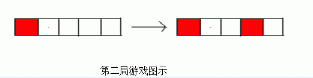

一排n个格子，两人轮流用k种颜色给未染色的格子染色，要求每次染色后都不能有两个相邻的格子被染上了相同的颜色，你需要做的是判断一个已有部分格子被染色的初始局面是先手必胜还是后手必胜。
| F.A.Qs | Home | Discuss | ProblemSet | Status | Ranklist | Contest | 入门OJ | ModifyUser Xeonacid | Logout | 捐赠本站 |
|---|
| F.A.Qs | Home | Discuss | ProblemSet | Status | Ranklist | Contest | 入门OJ | ModifyUser Xeonacid | Logout | 捐赠本站 |
|---|
第一局游戏中局面是对称的，所以只要先手可以给格子染色，后手就可以给其对称的格子染色，故后手必胜。
第二局游戏中，先手给第4个格子染色后，后手就不能染色了，故先手必胜。

对于100%的数据 1≤n≤105